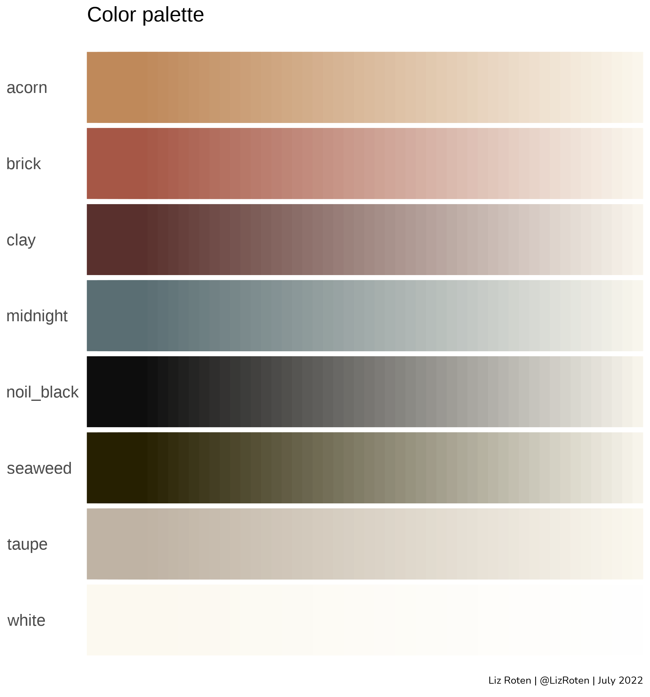
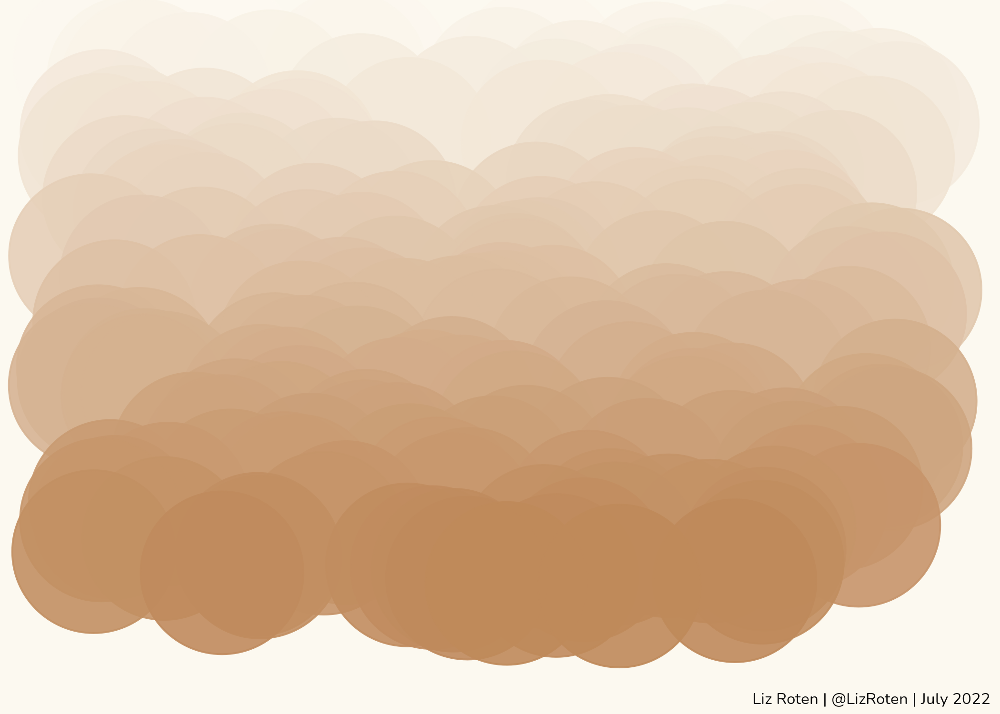
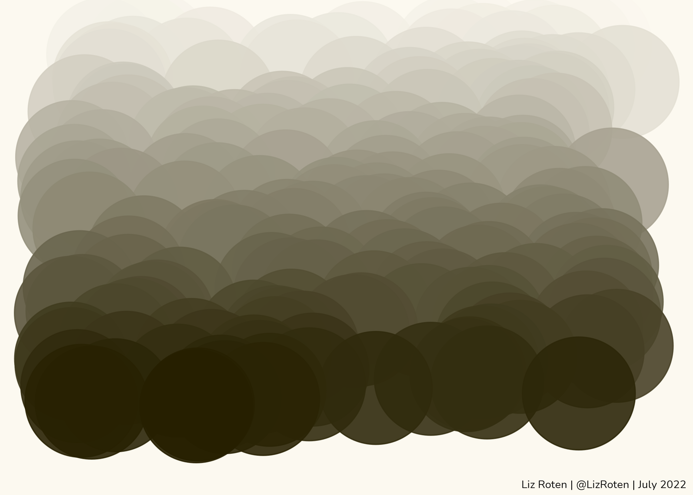
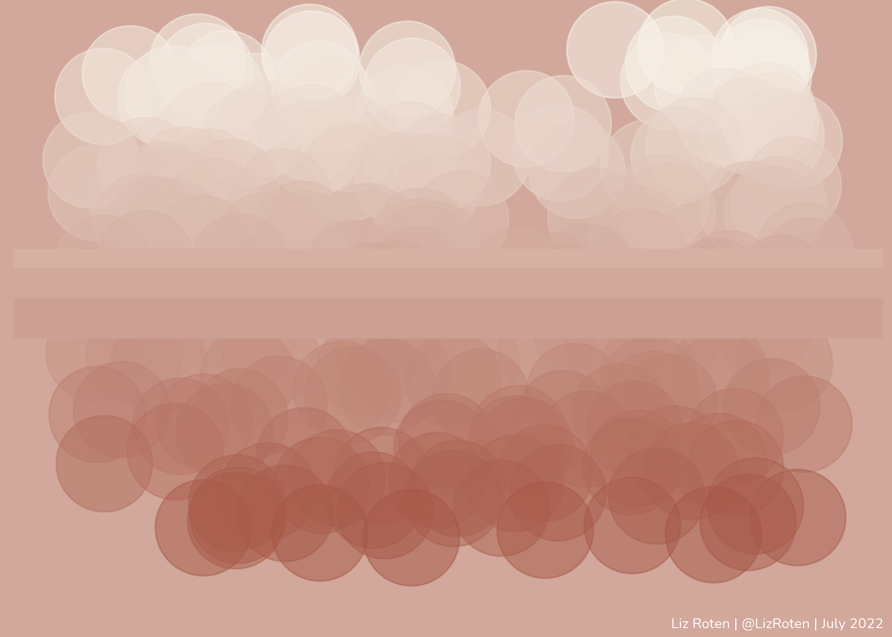
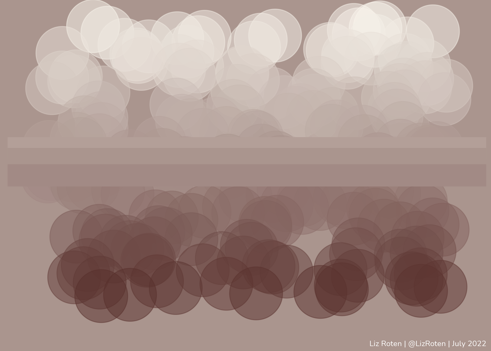
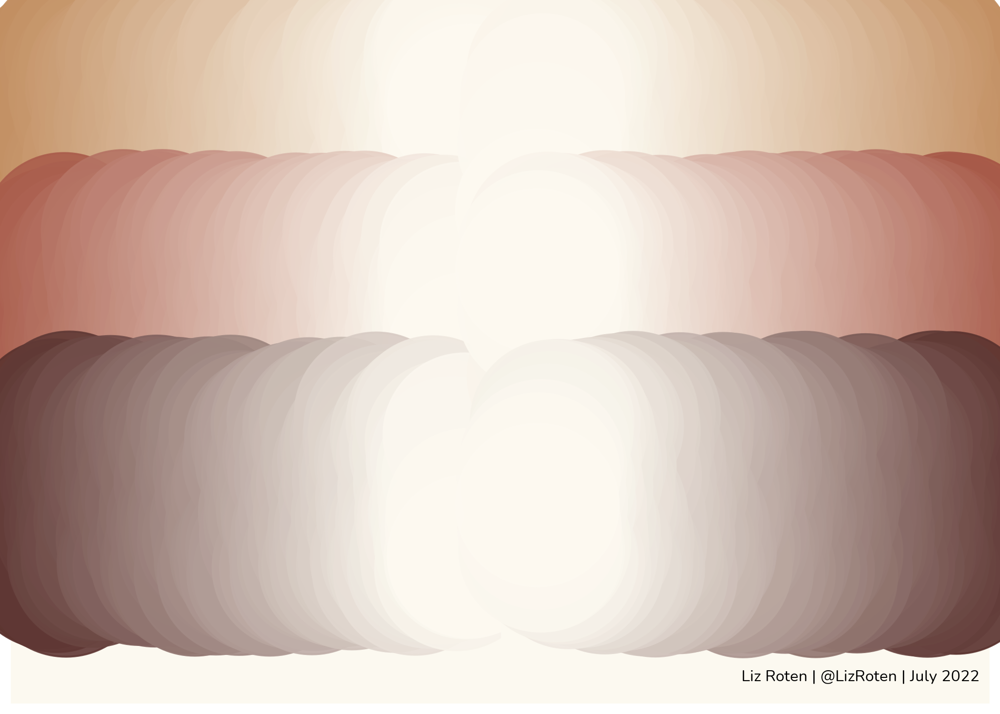
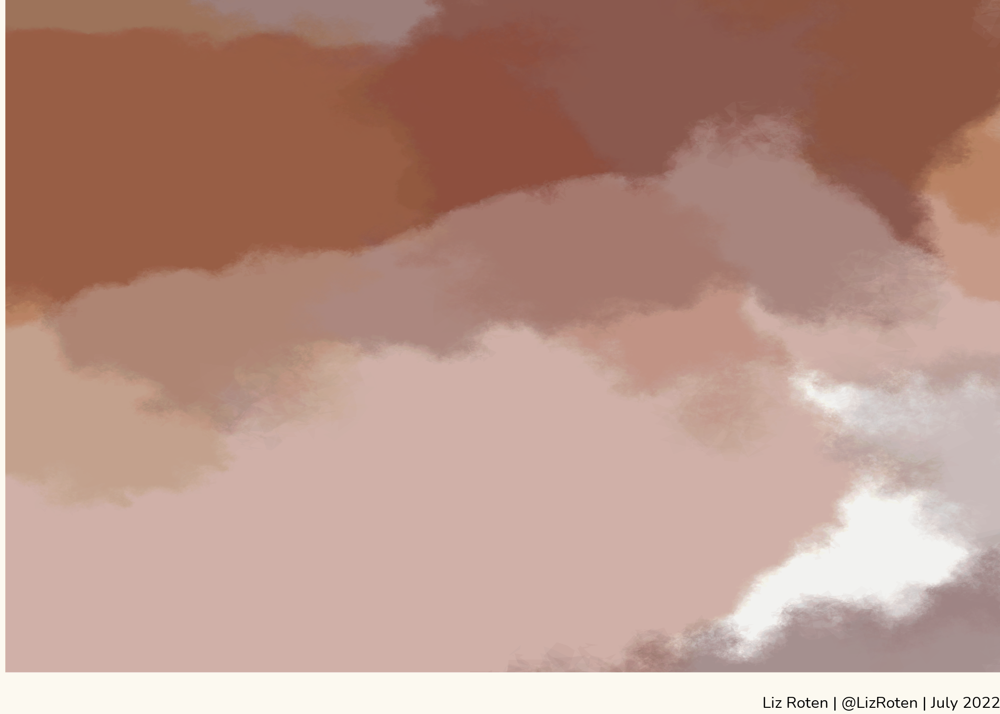

Color palette
I’m having a moment with linen, so I decided to make my color palette for my rstudio conference talk a link here match my handmade garments.
Colors based on {dutchmasters}, semi.joan’s instagram, and Blackbird Fabrics collection of linen.
dutch_white <- dutchmasters$pearl_earring["white(colar)"]
brick <- colorRampPalette(c("#A65746", dutch_white))
midnight <- colorRampPalette(c("#5A6E73", dutch_white))
clay <- colorRampPalette(c("#59302D", dutch_white))
taupe <- colorRampPalette(c("#BFB3A4", dutch_white))
acorn <- colorRampPalette(c("#BF895A", dutch_white))
seaweed <- colorRampPalette(c("#262001", dutch_white))
noil_black <- colorRampPalette(c("#0D0D0D", dutch_white))
white <- colorRampPalette(c(dutch_white, "#FFFFFF"))
Function to create palette ramp with a set number of levels.
create_palette_ramp <- function(x = 50){
tibble::tibble(
family = c(rep("brick", x),
rep("midnight", x),
rep("clay", x),
rep("taupe", x),
rep("acorn", x),
rep("noil_black", x),
rep("white", x),
rep("seaweed", x)),
level = c(rep(1:x, 8)),
code = c(brick(x),
midnight(x),
clay(x),
taupe(x),
acorn(x),
noil_black(x),
white(x),
seaweed(x))
) %>%
dplyr::arrange(-level)
}
palette_ramp50 <- create_palette_ramp()
ggplot(palette_ramp50,
aes(x = level,
y = family,
color = code)) +
geom_point(size = 18.4,
shape = 15) +
scale_color_identity() +
scale_y_discrete(limits = rev) +
labs(title = "Color palette") +
theme_minimal() +
theme(axis.title = element_blank(),
axis.text.x = element_blank(),
panel.grid = element_blank(),
axis.text.y = element_text(hjust = 0))

Gradients with dots
Notice {purrr} use to generate a plot for each color all at once.
set.seed(24601)
split_palette <- create_palette_ramp(200) %>%
filter(family != "white") %>%
arrange(family, -level) %>%
group_by(family) %>%
group_split()
purrr::map(split_palette, function(x){
p <- ggplot(x,
aes(x = family,
y = level,
color = code)) +
geom_jitter(
size = 38,
width = .55,
height = 0,
alpha = 0.90) +
scale_color_identity() +
# scale_y_discrete(limits = rev) +
coord_cartesian(clip = "off",
xlim = c(0.952, 1.058),
ylim = c(-11.5, 208)
) +
theme_minimal() +
theme(axis.title = element_blank(),
axis.text.x = element_blank(),
panel.grid = element_blank(),
axis.text.y = element_blank(),
plot.background = element_rect(fill = dutch_white,
colour = NA))
})
## [[1]]

##
## [[2]]
##
## [[3]]
##
## [[4]]
##
## [[5]]

##
## [[6]]

##
## [[7]]
imgs_bare <-
list.files("index_files/figure-html/", pattern = "single-gradients*",
full.names = T) %>%
purrr::map(function(x){
htmltools::tags$img(src = x)
})
widgetframe::frameWidget(slickR::slickR(obj = imgs_bare))
Gradient dots with bars
set.seed(24602)
split_palette_bubble <- create_palette_ramp(200) %>%
filter(family != "white") %>%
arrange(family, -level) %>%
group_by(family) %>%
group_split()
purrr::map(split_palette_bubble, function(x){
max_level = max(x$level)
ggplot(x,
aes(x = family,
y = level,
color = code)) +
geom_jitter(
size = 20,
width = 0.5,
height = 0.2,
alpha = 0.5) +
scale_color_identity() +
geom_hline(yintercept = max_level * 0.55,
color = x$code[max_level * 0.45],
size = 8) +
geom_hline(yintercept = max_level * 0.5,
color = x$code[max_level * 0.5],
size = 10) +
geom_hline(yintercept = max_level * 0.45,
color = x$code[max_level * 0.55],
size = 8) +
coord_cartesian(clip = "off",
# xlim = c(-0.2, 0.2),
ylim = c(-5, 205)) +
theme_minimal() +
theme(axis.title = element_blank(),
axis.text.x = element_blank(),
panel.grid = element_blank(),
axis.text.y = element_blank(),
plot.background = element_rect(fill = x$code[max_level * 0.5],
colour = NA))
})
## [[1]]
##
## [[2]]

##
## [[3]]

##
## [[4]]
##
## [[5]]
##
## [[6]]
##
## [[7]]
set.seed(24601)
select_pal <- create_palette_ramp(400) %>%
filter(family %in% c("brick",
"clay",
"acorn"
# "taupe"
)) %>%
arrange(family, level)
p <- ggplot(select_pal,
aes(y = family,
x = level,
color = code)) +
geom_jitter(
size = 38,
height = .45,
width = 0,
alpha = 0.90) +
scale_color_identity() +
scale_y_discrete(limits = rev) +
coord_cartesian(clip = "off") +
theme_minimal() +
theme(axis.title = element_blank(),
axis.text.x = element_blank(),
panel.grid = element_blank(),
axis.text.y = element_blank(),
plot.background = element_rect(fill = dutch_white,
colour = NA))
p + (p + scale_x_reverse())

Watercolor-style abstracts
load(file = "data/seed_state.RData")
wat <- canvas_watercolors(colors = c(acorn(1),
brick(1),
clay(1),
acorn(1),
brick(2),
clay(3)),
background = dutch_white,
layers = 20,
resolution = 300,
depth = 5)
wat +
coord_cartesian(ylim = c(100,200),
xlim = c(75,175))
